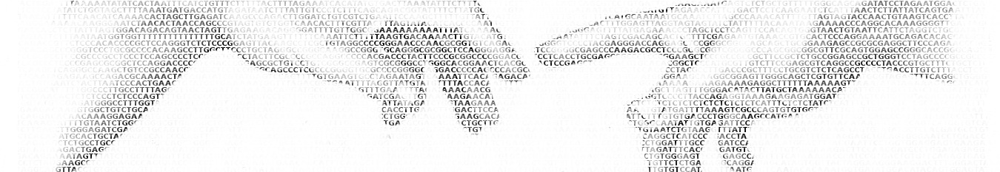

Bioinformatics seminar
Next seminar
AI driven enzyme discovery
Program
| 13. 5. 2026 | Kamil Wojkowiak (University of Wrocław) | Molecular dynamics simulations of biomolecular systems - conceptual background and selected case studies |
Sending information about next lecture via mailing list
Past invited lectures
Doctoral bioinformatics seminar information
The seminar is running concurrently with the Doctoral bioinformatics seminar (NSWI201) specifically designed for PhD students in the Bioinformatics and Computational Biology doctoral study program. More information for PhD students is available on a separate website.
Contact
Managed by departments of
- Software Engineering, Faculty of Mathematics and Physics, Charles University (Malostranské nám. 25, 118 00 Praha 1 - Malá Strana)
- Cell Biology, Faculty of Science, Charles University (Viničná 7, 128 00 Praha 2)